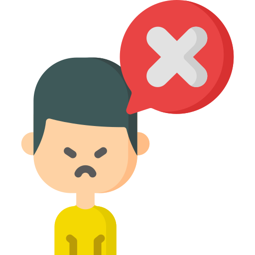

<ion-header>
  <ion-toolbar>
    <ion-title>principal</ion-title>
  </ion-toolbar>
</ion-header>

<ion-content scroll-y="false">
  <div class="container">
    <ion-grid>
      <ion-row size="12">
        <ion-col
          class="ion-margin-top ion-margin-bottom"
          offset="1"
          size="10"
          style="--ion-grid-column-padding: 25px"
          ><button [routerLink]="['/tabs/lindas']" class="learn-more">
            </button
        ></ion-col>
        <ion-col class="ion-margin-top" offset="1" size="10" style="--ion-grid-column-padding: 25px"
          ><button [routerLink]="['/tabs/feas']" class="learn-more">
            </button
        ></ion-col>
      </ion-row>
    </ion-grid>
  </div>
  <!-- <ion-tabs>
    <ion-tab-bar slot="bottom">
      <ion-tab-button [routerLink]="['/principal']">
        <ion-icon name="home-outline"></ion-icon>
        <ion-label>Principal</ion-label>
      </ion-tab-button>
      <ion-tab-button [routerLink]="['/lindas']">
        <ion-icon name="thumbs-up-outline"></ion-icon>
        <ion-label>Lindas</ion-label>
      </ion-tab-button>

      <ion-tab-button [routerLink]="['/feas']">
        <ion-icon name="thumbs-down-outline"></ion-icon>
        <ion-label>Feas</ion-label>
      </ion-tab-button>

      <ion-tab-button [routerLink]="['/propias']">
        <ion-icon name="man-outline"></ion-icon>
        <ion-label>Propias</ion-label>
      </ion-tab-button>

      <ion-tab-button [routerLink]="['/estadisticas']">
        <ion-icon name="stats-chart-outline"></ion-icon>
        <ion-label>Estadistica</ion-label>
      </ion-tab-button>
    </ion-tab-bar>
  </ion-tabs> -->
</ion-content>
